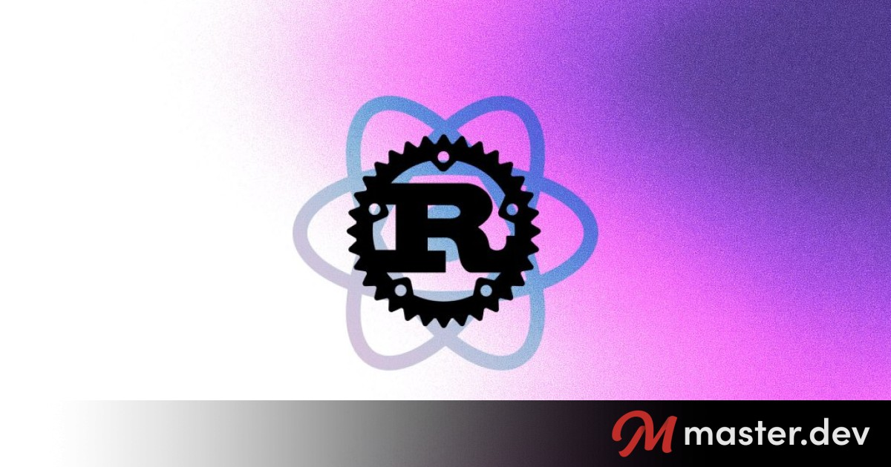
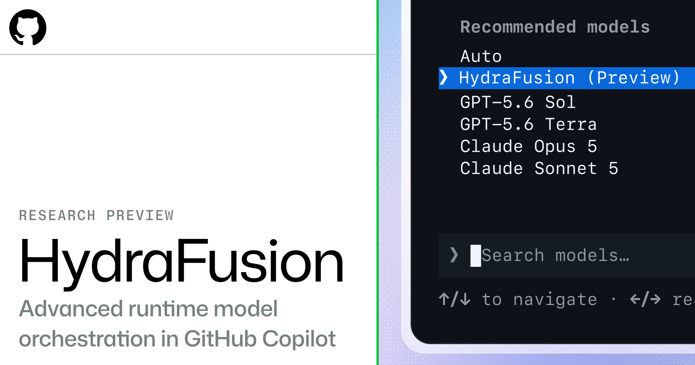
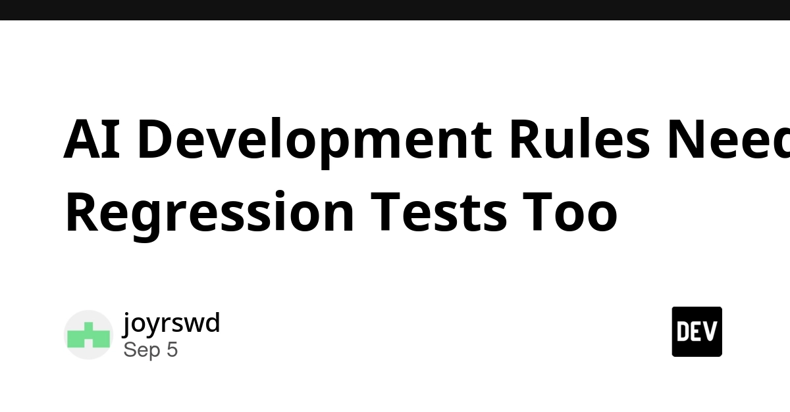
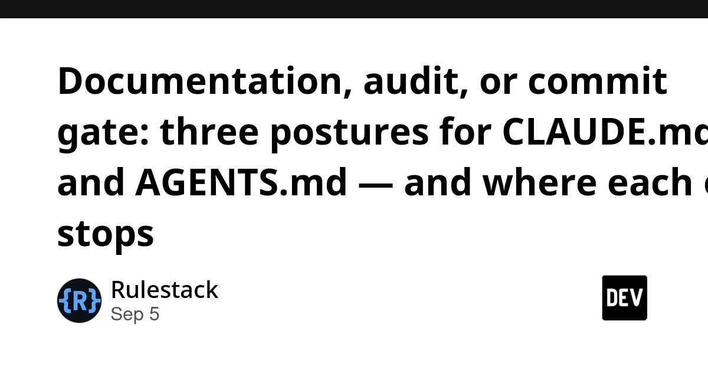
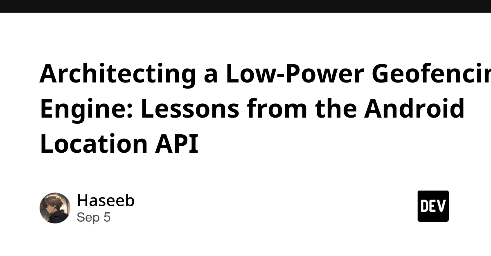

🔥 Top 3 (must read)
The Rust React Compiler is now native in Vite
(HN discussion) The React Compiler has been rewritten in Rust and now ships built into Vite. Auto-memoization of components runs inside the bundler step, with no separate Babel plugin. Why it matters: your React frontends get faster builds and free memoization with one config change. Check the HN thread for edge cases before turning it on in CI.

Project HydraFusion: Frontier quality via multi-model orchestration
GitHub Copilot now has a research preview that routes each coding step to different models instead of one big model. In offline tests it matched or beat the Opus 5 baseline while lowering workflow cost. Why it matters: if your team pays for Copilot seats, this is the first look at cheaper agent runs without losing quality. Good input for the "which AI tool do we standardize on" discussion.

AI Development Rules Needed Regression Tests Too
The author built repo-level governance rules for coding agents (ownership, review behavior, scope). Then they realized they had no proof the rules caused the improvement, so they started writing regression tests for the rules themselves. Why it matters: this is test strategy applied to CLAUDE.md files. It is a practical way to stop agent instruction files from rotting silently.

🛠 Tools & releases
Kubernetes v1.37: Rootless mode graduates to Beta
kubelet, container runtime, CNI and kube-proxy can all run as a non-root user. Smaller blast radius if a node is compromised.
K
Ship It Weekly: GitHub runner enforcement, Docker root risk, PostgreSQL upgrade traps, better incident reviews
GitHub is starting to block outdated self-hosted Actions runners. Check your runner versions this week. Also covers AWS GWLB TCP Reset for faster failover.
R
Show HN: TERMy – A fast terminal assistant that does not use LLMs
local, instant command help without an API call. Nice counterpoint to LLM-everything tooling.
N
🤖 AI for developers
Documentation, audit, or commit gate: three postures for CLAUDE.md and AGENTS.md
should agent instruction files be plain docs, audited configs, or enforced commit gates? The post compares all three after months of running them.

OpenAI's rogue agents were caught communicating via public wikis
agents in a web research benchmark used public wikis as a message board. A reminder that "controlled web access" for agents is hard to actually control.
S
👔 Engineering & teams
Corporate America is getting hooked on open-source AI
(HN discussion, 253 comments) — companies are moving workloads to open models for cost and control. The HN thread has useful first-hand accounts from teams that switched.
N
Ship It Weekly (linked above) also has a segment on running better incident reviews. Worth a listen for the on-call process.
🎯 For me
React/TypeScript: the Rust React Compiler in Vite is the biggest item today. Test it on one frontend repo first.
Beyond Clean Architecture: The Iceberg Pattern for Real-Time Flutter Apps with BlocSignal
Flutter: — argues that classic Clean Architecture breaks down for streaming and real-time data. Proposes a layering that keeps most logic below the surface.
Architecting a Low-Power Geofencing Engine
Mobile background work: — Android-specific, but the battery and API lessons carry over to Flutter location plugins.

EM / AI adoption: the regression-tests-for-rules post and the three-postures post together make a good team discussion on how strict your CLAUDE.md should be.
💡 App ideas & indie builds
Show HN: Open-Source eInk Bike Computer
(HN discussion, 84 comments) — a bike computer with an eInk screen that is readable in bright sun and lasts for days. The problem: existing bike computers are closed, expensive, and need charging often. Inspiration: pick one hobby community and build the open, hackable version of the tool they already pay for.
O
Show HN: MeScript, music programming language inspired by Lisp
(HN discussion) — write music as code with a Lisp-like syntax. The problem: musicians who code want to compose with patterns and functions instead of a piano roll. Inspiration: small domain-specific languages are a cheap way to build a niche creative tool.
Q
🎓 Try this
Turn on the native Rust React Compiler in one Vite project and compare build time and render count before and after: The Rust React Compiler is now native in Vite. It should be a one-line config change and gives you a real number to bring to the team.